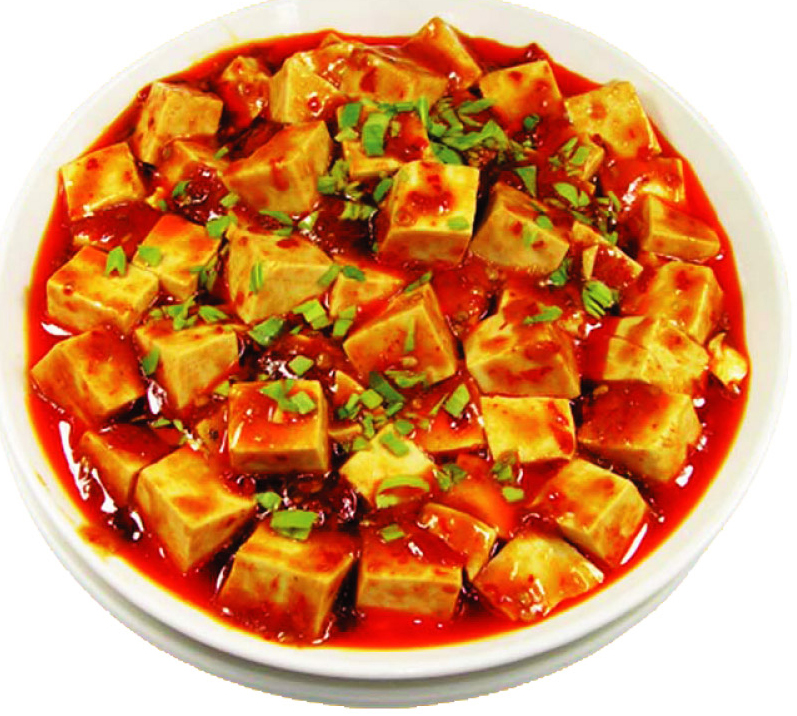

Home
款川味的豆腐，也是最平常的一种做法，那就是“麻婆豆腐”

豆腐的营养丰富，是家庭炒菜中广泛使用的材料。
成分
- 豆腐
- 牛肉末
- 青蒜末
- 花椒面
- 香菜末
- 酱油
- 豆瓣酱
- 豆鼓
- 盐
- 鸡粉
- 黄酒
- 肉汤
- 大蒜末
- 水淀粉
- 花生油
步骤
- 主料；豆腐一块400克、牛肉末50克；调料：豆瓣酱30克、豆豉20克、盐2克、鸡粉2克、酱油15克、黄酒10克、大蒜末20克、
肉汤300ml、水淀粉适量、花生油30克；配料：青蒜末30克、花椒面1克、香菜末5克。
- 先把豆腐切成2厘米见方的丁。
- 在清水里放少许盐。
- 把切好的豆腐在水中。
- 浸泡15分钟。
- 然后捞出备用。
- 炒勺上火烧热，注入适量花生油便炒肉末。
- 肉末变色后下入郫县豆瓣酱煸炒
- 煸炒出香味后下入豆豉煸炒
- 把豆豉煸炒出香味后，下入蒜末煸炒
- 然后烹入黄酒炒匀。
- 炒香以上材料后倒入肉汤煮开。
- 然后放入适量的酱油。
- 用盐调味。
- 然后下入豆腐煮开
- 豆腐煮大约3-5分钟。
- 然后放入少许鸡粉提鲜。
- 用水淀粉勾芡。
- 此时要边摇锅边用手勺推动锅底，使豆腐不至糊锅，当淀粉彻底糊化后便可出锅码盘。
- 装盘以后趁热均匀的撒上一层花椒面
- 然后，撒上青蒜末和少许香菜末，假如不喜香菜可不放。此菜至此便告全部操作完成